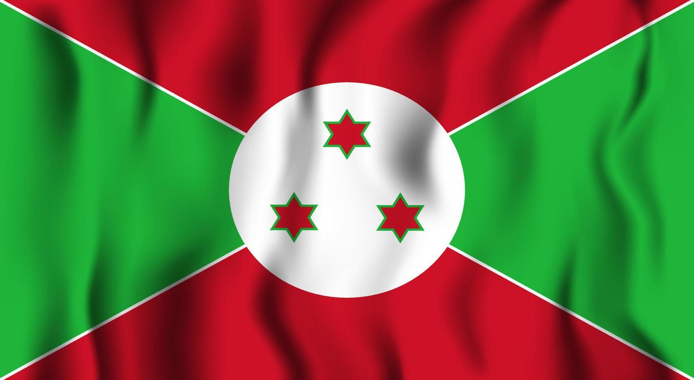

Explorando los Continentes y Países del Mundo
Algeria
Primer Ministro: Abdelmadjid Tebboune
Idioma: Árabe, bereber
Tamaño:2,381,741 km²
Habitantes:Aproximadamente 44 millones
Cultura: Influencias árabes y beréberes, famosa por su música rai y tradiciones culinarias.
Angola
.jpeg) Primer Ministro: João Lourenço
Idioma: Portugués
Tamaño:1,246,700 km²
Habitantes:Aproximadamente 33 millones
Cultura: Riqueza de danzas tradicionales como el semba, influencias africanas y portuguesas.
Primer Ministro: João Lourenço
Idioma: Portugués
Tamaño:1,246,700 km²
Habitantes:Aproximadamente 33 millones
Cultura: Riqueza de danzas tradicionales como el semba, influencias africanas y portuguesas.
Benin
Primer Ministro: Patrice Talon
Idioma: Francés
Tamaño:112,622 km²
Habitantes:Aproximadamente 12 millones
Cultura: Influencias vodou, festivales coloridos y rica tradición artesanal.
Botswana
Primer Ministro: Mokgweetsi Masisi
Idioma: Inglés, setswana
Tamaño: 581,730 km²
Habitantes: Aproximadamente 2.3 millones
Cultura: Tradiciones indígenas, música y danzas como el traditional Tswana.
Burkina
Primer Ministro:Ibrahim Traoré
Idioma: Francés
Tamaño:strong272,967 km²
Habitantes:Aproximadamente 21 millones
Cultura: Famoso por su arte y festivales, mezcla de tradiciones africanas.
Burundi

Primer Ministro: Évariste Ndayishimiye
Idioma: Kirundi, francés, inglés
Tamaño:27,830 km²
Habitantes:Aproximadamente 12 millones
Cultura: Ricas tradiciones musicales y danzas, fuerte herencia cultural.
Cabo Verde
.jpeg) Primer Ministro: José Maria Neves
Idioma: Portugués
Tamaño: 4,033 km²
Habitantes:Aproximadamente 550,000
Cultura: nfluencias africanas y portuguesas, famosa por su música morna.
Primer Ministro: José Maria Neves
Idioma: Portugués
Tamaño: 4,033 km²
Habitantes:Aproximadamente 550,000
Cultura: nfluencias africanas y portuguesas, famosa por su música morna.
Camerún
.jpeg) Primer Ministro: Paul Biya
Idioma: Francés, inglés
Tamaño:475,442 km²
Habitantes: Aproximadamente 27 millones
Cultura: Diversidad étnica, rica en música, danza y arte.
Primer Ministro: Paul Biya
Idioma: Francés, inglés
Tamaño:475,442 km²
Habitantes: Aproximadamente 27 millones
Cultura: Diversidad étnica, rica en música, danza y arte.
República Centroafricana
Primer Ministro: Faustin-Archange Touadéra
Idioma: Sango, francés
Tamaño: 622,984 km²
Habitantes: Aproximadamente 5 millones
Cultura: Influencias africanas, música y tradiciones artesanales.
Congo, República Democrática
.jpeg) Primer Ministro: Félix Tshisekedi
Idioma: Francés, lingala, swahili
Tamaño:2,344,858 km²
Habitantes:Aproximadamente 95 millones
Cultura: Diversidad cultural, rica en música y danzas como el soukous.
Primer Ministro: Félix Tshisekedi
Idioma: Francés, lingala, swahili
Tamaño:2,344,858 km²
Habitantes:Aproximadamente 95 millones
Cultura: Diversidad cultural, rica en música y danzas como el soukous.